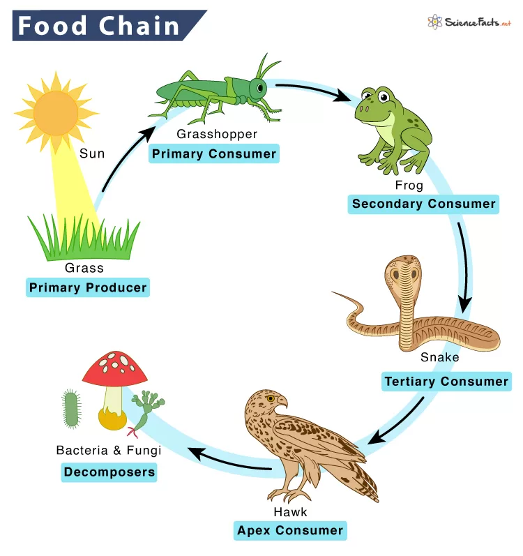
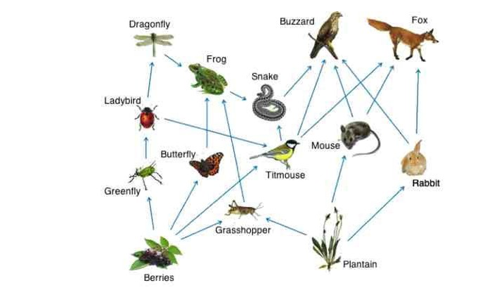
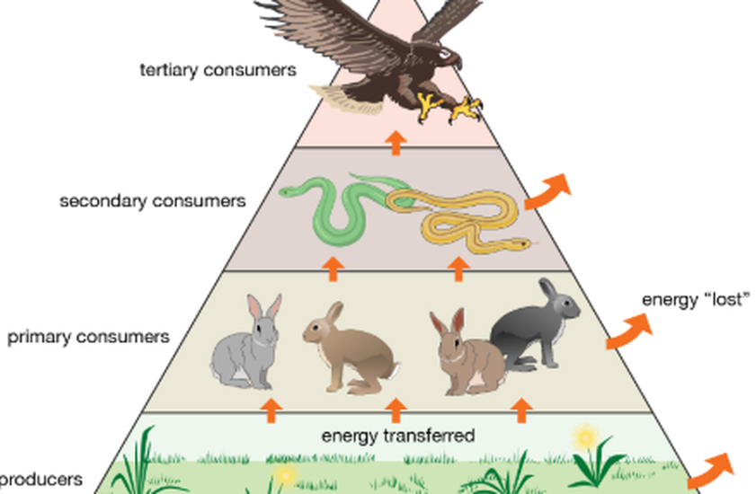

Makhluk Hidup dan Lingkungannya
1. Ciri - Ciri Makhluk Hidup
- Bernafas(Respirasi)
- Memerlukan Makanan
- Bergerak
- Peka Terhadap Rangsangan
- Tumbuh dan Berkembang
2. Komponen Biotik dan Abiotik
Komponen biotik merupakan suatu komponen yang ada di dalam sebuah ekosistem dan berupa suatu organisme makhluk hidup. Dimana komponen biotik ini bervariasi, mulai dari hewan, manusia, tumbuhan, dan juga mikro-organisme.
Komponen abiotik merupakan semua bentuk benda mati yang terdapat di permukaan bumi dan memberikan banyak pengaruh untuk keberlangsungan hidup manusia dan makhluk hidup lainnya. Contoh komponen abiotik seperti, sinar matahari, air, udara, suhu dan tanah.
3. Rantai Makanan
Pengertian rantai makanan sebagai sebuah peristiwa dimakan atau memakan antara sesama makhluk hidup dengan suatu urutan tertentu. Dalam rantai makanan juga terdapat makhluk hidup yang berperan sebagai produsen, konsumen, dan dekomposer atau pengurai.
4. Jaring - Jaring Makanan
Jaring-jaring makanan adalah kumpulan dari rantai makanan yang tumpang tindih tetapi saling berhubungan di ekosistem sehingga membentuk semacam jaring.
5. Piramida Makanan
Piramida makanan adalah suatu gambaran yang menjelaskan hubungan antar komponen makhluk hidup yang ada dalam sebuah ekosistem. Piramida makanan sendiri berbeda dengan rantai makanan, piramida makanan diketahui lebih menggambarkan sebuah interaksi dari setiap komponen biotik.